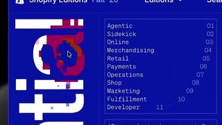
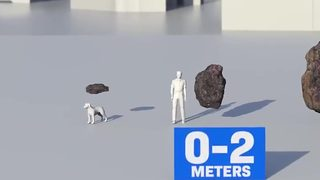

点封面在页面里播放（Vimeo / YouTube / X 需要代理；Vimeo 若没自动开始，再点一下播放键）。觉得好就点「喜欢」，有想法就写在下面的框里保存，我每天出日报前会读，存进偏好和审美库；会多找同类，但每天仍保持类型分散。
目录 01 Design Details（Good ideas travel / Clackety Clack）02 activate card interaction03 make it pop: 003 glazed04 Propagande Showreel05 Imperfect Women Opening Titles（补课，2026）06 雪国のローカル線（冬沢）07 Bicycle cards in three.js08 Autopilot（Site of the Week）09 There's something weird inside Mars10 Sequential Momentum（TCM IDs）－ 差一点进的 3 条拆 本周最值得学：Josh Miller 包装盒撕纸转场
01 UI动效 转场 3D质感
Design Details（Good ideas travel / Clackety Clack）
Josh Miller（@joshm；60fps 转发） · 11-18 日报 · X 11-17 【看过视频】（完整看过 25.3 秒）
X 两条视频合计 25.3 秒，完整看过（看片工具；结尾来电页用抽帧核对过）
原帖里是两条连发，一条 16.2 秒、一条 9.1 秒
字体未识别（无衬线，标题加粗居中）
全片无声
好在哪 两条加在一起 25.3 秒。第一条：暗色卡片里一个牛皮纸箱绕竖轴匀速转，胶带和贴纸转到正面，下面写「Good ideas travel」，蓝按钮「Gift to a friend」，界面其他部分都不动。第二条：整屏变成牛皮纸，中间有「Pull to open」虚线；纸条从左往右撕约 7 秒，能看见卷边和影子，最后硬切到「Incoming Call / Clackety Clack」来电页。比一般「做一个 3D 盒子转一圈」好在字和按钮完全停住，撕之前先告诉你从哪撕，撕完不用淡出。细拆见文末可借 介绍要发给朋友的小工具：先让产品在盒子里慢慢转大约 3 秒，把材质看清楚；再沿一条虚线撕开，露出第一屏。虚线先出现，再撕
展开全文
02 UI动效 3D质感 转场
activate card interaction
60fps（@60fpsdesign）× Plasma · 11-20 日报 · X 11-19 【看过画面（抽帧）】
X 抽了 12 帧（5.4 秒成片）
字体未识别（界面无衬线，像手机系统字）
全片无声；右下角有 60fps 水印
好在哪 5.4 秒。白底手机里，一张银色 Visa 卡先平放，再转到「Activate your card」。PIN 数字从键盘一个一个滚进卡片上的圆点，输完后卡片落到「Set your card PIN」，金属表面有一层很克制的反光。这是你点过喜欢的同一套 Plasma 开卡。比一般「弹窗输入密码」好在数字走进卡片里，没有另开一层窗口，也没有粒子可借 做激活、验证这类切换：让数字或进度直接走进卡片里，不要另弹一层。卡片留一点金属厚度和软影子就够了
展开全文
03 代码动画 字体版式 3D质感
make it pop: 003 glazed
jhey（@jh3yy） · 11-16 日报 · X 11-16 【看过画面（抽帧）】
抽了 12 帧。字体未识别（紧凑的粗无衬线）
引用了自己 11 月 13 日的帖，这次是系列第 3 条 glazed
好在哪 21 秒，黑底粗白字「make it pop」。只有「pop」做成一层粉色糖釉，表面有小碎花和一圈软光晕，像玻璃糖纸，其余字保持平面。你喜欢过他的玻璃折射和材质细节，这条是把那层质感只用在一个词上。比整句加特效更干净可借 标题里只需强调一个词时，把那一个词做成有厚度的釉面或玻璃，其余字保持平面白字
展开全文
04 字体版式 代码动画 转场
Propagande Showreel
Propagande（Henri Heymans、Benjamin Robinet、Nam Hai）/ Codrops · 11-21 日报 · X / Codrops 11-20 【看过视频】（完整看过 65.0 秒）
65.0 秒成片，完整看过（看片工具）
字体未识别（标题是很粗的扩展无衬线；Savoir Faire 一段用高对比衬线）
主色黑白，短暂出现亮柠绿、海蓝和橙黄。全片铺了一层胶片颗粒
好在哪 65 秒作品集。开头「PROPAGANDE」几个字母先扭一下再变清楚。4 秒时，一只篮球抛上去的弧线，直接接到一本灰色 3D 书转出来。中间一排图片先平铺，再卷成环，收成一枚盾牌。后段一块透明玻璃在衬线字前面轻轻晃，把后面的字扭弯。比一般作品集快剪好在段落靠动作接住，玻璃也只放在要强调的那一行前面，不是满屏折射可借 段落切换时，让前一个物体的动作把下一个接住，不要淡入淡出。标题可以先打散，再一起吸回原位。玻璃折射只留给需要强调的那一行字。整段很快，用的时候放慢
展开全文
05 片头片尾 字体版式 转场
Imperfect Women Opening Titles（补课，2026）
Imaginary Forces（创意指导 Karin Fong；FX 研发 Danil Krivoruchko） · 11-17 日报 · X 11-16 再发完整成片（补课 2026） 【看过视频】（完整看过 50.2 秒）【补课：2026】
X 50.2 秒全片完整看过（看片工具），下面有细拆
官方成片发表于 2026 年春，今天按补课收录
字体未识别（细衬线、全大写、字距很开）
好在哪 50 秒片头。瓷白和亚光黑的人像、手、肩膀被裂缝切开，金色像金缮一样从缝里流过去，裂口后面是洛杉矶的桥、棕榈和海浪。字是细衬线全大写，写在瓷面上，不悬在空中。全片几乎都是硬切，只有片名字卡用了叠化。你喜欢过 BUCK 的 Bass X Machina 片头，这条好在裂缝本身就是转场，字还坐在材料上可借 讲「表面完整、里面有裂」时，用一道快速裂痕当转场，金线填上，下一句写在裂开的那一块上
展开全文
06 代码动画 3D质感
雪国のローカル線（冬沢）
SF Create（@sfc43588） · 11-16 日报 · X 11-16 【看过视频】（完整看过 31.5 秒）
31.5 秒全片完整看过（看片工具），下面有细拆
作者说全部用代码写（three.js）
站牌字是场景里的模型：主站名「冬沢」，平假名「ふゆさわ」；没有后期字幕
好在哪 31.5 秒，6 个镜头内外交替。车厢过道慢慢往前推，地板反出顶灯；切到车外，红车厢在雪林里开过，车灯扫亮积雪；再切回窗台：一罐茶、三个橘子，窗外树影往后飞。进站时车明显减速，停稳后窗外正对「冬沢」站牌。最后一镜完全固定，只有路灯里的雪在飘。比一般「漂亮的 3D 风景循环」好在有明确的到达节奏，窗台上的物件和雪地上的脚印让场景不像没人住过的模型可借 工具讲解若要一段「到达」过场：内外各切三次，每镜 4 到 6 秒，最后停在一个空站台。窗台放一两件真物件
展开全文
07 代码动画 3D质感
Bicycle cards in three.js
vinny（@vinicius2prg） · 11-19 日报 · X 11-17 【看过画面（抽帧）】
抽了 12 帧（25.4 秒成片）
字体未识别（结束句是细的无衬线；牌面是扑克常规字体）
有声音（翻牌轻响）
好在哪 约 25 秒。绿色桌面上，一副红背花纹的扑克牌自己发、翻、摊开。牌会像纸一样翘边，落下时有很短的影子。作者写了：牌面、牌背和翻牌的声音全部用代码生成，没有用现成图片和音效。比「贴一张图再旋转」好在边缘和阴影是做出来的。你说过拼图的边缘和棱角是目前欠缺的，这条把纸的边缘做干净了可借 讲「这是用代码做的」时，不要加粒子。一张有厚度的纸、一次翘边、一下轻响就够
展开全文
08 转场 UI动效 字体版式
Autopilot（Site of the Week）
OFF+BRAND（@itsoffbrand）/ GSAP · 11-19 日报 · X 11-18 【看过视频】（完整看过 20.0 秒）
X 20.0 秒成片，完整看过（看片工具）
字体未识别（几何无衬线，标题比说明更粗）
全片无声
好在哪 20 秒。整片坐在一层模糊的草地风景上，中间是一块深色圆角卡片。点一下，画面突然变成大方块像素，再清楚成下一幕。后面两段同样接法，分别写成「Users invest.」和「Monetize your strategy.」。字和导航从来不跟着像素化，只在像素最糊的那一下换文案。上周精选里 Fluo 也用过像素块换场，但那是整屏跟着鼓点扫过去；这条好在字和画面分成两层，顶栏一直不动可借 讲三步流程时，不要整屏一起淡入淡出。画面用大方块像素糊一下再清楚，标题单独做透明度切换，导航一直不动
展开全文
09 知识讲解 数据可视化
There's something weird inside Mars
Cleo Abram · 11-16 日报 · YouTube 11-14 【看过画面（抽帧）】
YouTube 抽了 12 帧（71 秒竖屏）
字体未识别（粗无衬线 + 荧光绿标题）
同类短视频 Saturn’s rings 今天没收，避免同一作者占两席
好在哪 约 71 秒竖屏。先用带箭头的彩色火星标出北半球，再拿奥林帕斯山跟珠峰比高度，然后剖开星球画地幔温差，黄箭头指出哪一边更热。口播和箭头线一起出现。你喜欢过她在地球地图上画箭头，这是同一路：箭头直接画在对象上，比切走画面改用表格更清楚可借 讲「两边不一样」时，在地图或剖面上直接画箭头，不要改用一堆数字表格。箭头出现的时机跟口播对齐
展开全文
10 转场 片头片尾 剪辑节奏
Sequential Momentum（TCM IDs）
MAMMAL · 11-20 日报 · Motionographer 11-19 【看过视频】（完整看过 65.1 秒）
65.1 秒成片，完整看过（看片工具）
字体未识别（TCM 标志是几何无衬线；C 在各段里是笔刷、色块或圆点）
好在哪 65 秒，6 段独立片头，每段大约 10 秒。一个彩色的字母 C 跟着电影里的动作走：顺着秋千的弧线摆、贴着稻草人倒下的角度、当遮罩框住下楼梯的人。动作到顶点时，背景突然切成白底，这个 C 收进画面正中，和 T、M 拼成 TCM 标志，再变回标准黑字。比另做一张静态片尾卡好在图形先借画面里的动作，再在重音上收成标题可借 段落结束时，不要另做一张静态片尾卡。让一个简单图形先跟着画面里的动作走，在动作重音切开背景，图形自己滑到中间组成标题
展开全文
差一点进的 3 条 Kurzgesagt – In a Nutshell · 11-20 完整看过 77.3 秒。每个知识点只用一个具体画面（左右分屏、标签往下砸、1 美元变成 27 美元），手法很好；但这周知识讲解位给了 Cleo 的箭头，而且原片颜色很亮，和「克制」有点冲

jhey（@jh3yy） · 11-19 抽帧看过。字充电后整页裂开，镜头掉进字的下面，标题变成立体招牌，跟你喜欢的代码字体是同一路；但这周 jhey 已经进了糖釉那条，而且这条信息偏多

Cleo Abram · 11-18 抽帧看过。用铁塔和城市模型比小行星有多大，数字贴在物体旁边，手法清楚；Cleo 这周已经进了火星箭头，同一作者先放一条
本周最值得学
让包装自己打开，变成下一页 【看过视频】完整看过 25.3 秒（两条合计，看片工具；结尾来电页用抽帧核对过），11-18 细拆时看的 选它是因为和你评论过、以后想用的贴纸物理感是同一路：真的在撕一层有厚度的纸，不是贴图滑走。Josh Miller（The Browser Company，@joshm）做的两段 UI 动效，产品名叫 Clackety Clack，60fps 以 Design Details 转出来。好学的不是「做了一个 3D 盒子」，而是三件事：箱子自己匀速转，界面其他部分完全不动；撕纸之前先用虚线和「Pull to open」把位置告诉你；撕完不用淡入，直接硬切到结果页。下面从 11-18 细拆里压缩出能直接用的部分；写「建议」的是从画面倒推的做法，不是作者公布的代码。
25 秒怎么走（秒数是大约值；原帖是两条连发，16.2 秒 + 9.1 秒） 0:00–0:16 手机下半截特写，放在白底上，右下方有一层很软的影子。暗色圆角卡片里，一个牛皮纸箱绕竖轴顺时针匀速转（像转台，没有加速减速，也没有晃）。胶带和贴纸随着那个面转到镜头前。卡片下方是加粗白字「Good ideas travel」，两行灰字「Know someone who thinks out loud? / Send them Clackety Clack.」，再下面是平涂的蓝胶囊按钮「Gift to a friend」。文案和按钮全程不动 0:16 硬切到整机：屏幕铺满牛皮纸纹理和贴纸。中间一条很细的横虚线，左边写着「Pull to open」。顶栏是 9:41，底部有很小的条款字 0:17–0:24 从左边缘沿虚线往右撕，大约 7 秒。纸条向外卷，投下向右下的软影子，撕口是锯齿状的纸纤维。撕开的缝里先是一条纯白 0:24.6–0:25.3 硬切到来电页：白底，上方灰色小字 Incoming Call，下面加粗写 Clackety Clack，底部红 Decline、绿 Accept。短暂停住，视频结束 节奏和转场 第一条 16 秒几乎只有箱子在转，故意慢，让你把每个面的贴纸看清楚 第二条把撕纸拉到大约 7 秒，比常见的不到 1 秒切页慢得多，是为了让人看清纸的厚度和卷边 来电页只占最后不到 1 秒，只负责把结果锁住。两条之间是硬切，没有过渡。全片没有声音 转场不是淡入淡出，是「包装被撕开」。先有虚线和「Pull to open」预告位置，再真的从左往右撕，最后硬切到结果页 撕的过程是遮罩揭示：卷边本身是一层有厚度的纸，不是一条光滑的直线。来电页是硬切出现的，不是把牛皮纸继续撕到消失 字、光和材质 字体未识别。标题是无衬线加粗、居中；说明是更细的灰色无衬线；来电页也是无衬线，名字比 Incoming Call 更大、更黑 第一条的箱子是干净的 3D，软光，纸面没有很重的纤维；第二条的牛皮纸背景有更明显的纹理和色差 手机在白桌面上有向右下的软影子，光从左上来。蓝按钮是平涂，没有渐变和内阴影 主色是牛皮纸的棕，强调色是那颗蓝按钮和来电页的红绿，没有第三种跳色 在 Remotion / 代码里怎么做（建议，不是作者的代码） 箱子：一个 rotateY 循环，线性、慢、不要 spring。贴纸贴在对应的面上，转到正面时自然出现。转台这种运动可以只用匀速，不要给它加弹性 撕纸：做一条带卷边的遮罩从左往右刮，卷边下方加一层很淡的影子；撕口用轻微锯齿，不要做成光滑直线。撕到头之后硬切到下一页，不要把纸淡掉 难点是卷边的厚度和撕口的毛边。这两处不到位，就会看起来像一条普通的擦除转场。按钮和字不要跟着动 如果只是普通换一屏内容，转场还是应该回到 1 秒以内；这里把撕纸拉到 7 秒，是故意把材质展开给人看 更完整的拆在 11-18 日报细拆里。
用在「鱼知道」 比如介绍一个要发给朋友的小工具：先让产品在盒子里慢慢转大约 3 秒，把材质看清楚；再沿一条虚线撕开，露出工具的第一屏或「开始」按钮。虚线先出现，再撕，观众才知道下一步会发生什么。
本周偏好变化 喜欢：本周没有新的点赞或想法，先按你之前喜欢的包装和贴纸物理感、折射和玻璃、片头材质、运动曲线，以及 Cleo 的箭头来挑 不要：你踩过的 Branch 讲解、以及 3Blue1Brown 那类偏讲原理的片子，这周没有进精选；讲原理的知识讲解仍然少放 想问你：之前问过字体版式、转场、实拍剪辑要不要少推，还没有答复。这周这三类都留了位置。不想减就不用管 信源调整建议（等你确认再改） 上周建议把 Dominik Mészáros 加进日常信源，还没有答复，先不动。这周 SF Create（@sfc43588）有两条很干净的 three.js 氛围空镜，雪国慢车完整看过；Propagande 的作品集也完整看过，动作接动作和玻璃折射都能用。建议把 SF Create 和 Propagande 加入观察名单。同意就在想法框里写「同意」。
本周你的反馈（原话） 本周（11-16 至 11-21）没有新的赞、踩或想法。点赞接口这周多次超时或返回 500，没读到新记录；评论接口按 90 天窗口读过一遍（也是为了给旧评论保活），仍是之前已经记下的那 5 条。 反馈方式 喜欢就点心，不喜欢点踩，有想法写在每条下面的「想法」框里点保存，下次挑片前我会先读。
看原帖 ↗ 11-18 日报细拆 ↗
信源：X（@60fpsdesign、@jh3yy、@sfc43588、@codrops、@vinicius2prg、@greensock）、YouTube（Cleo Abram）、Vimeo（MAMMAL）
 X
X